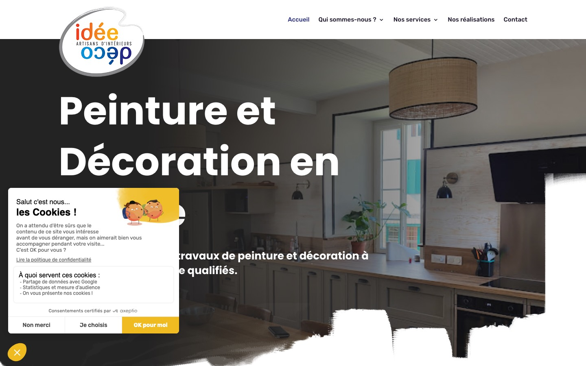
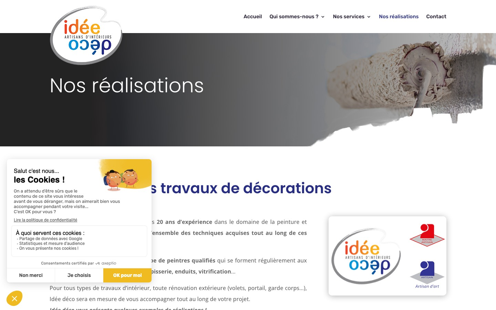
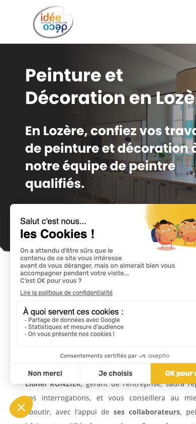
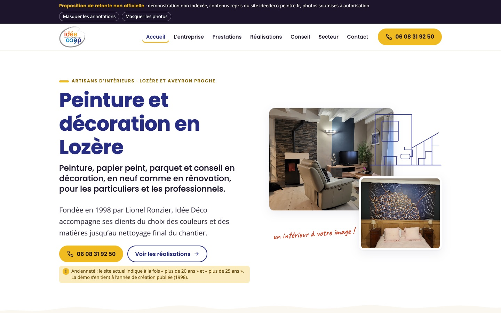
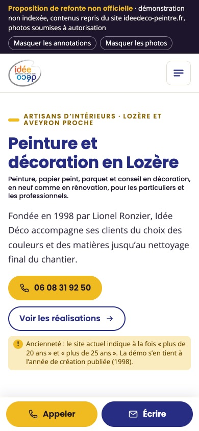
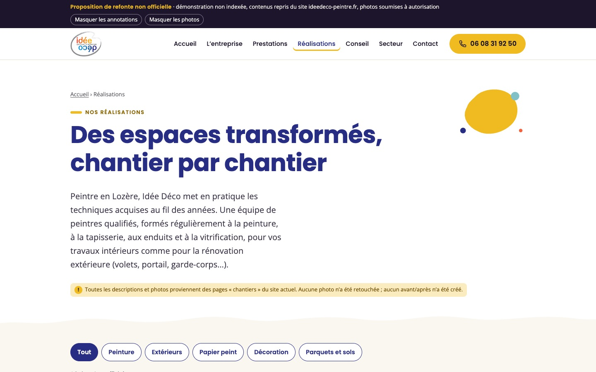

Idée Déco,
un site qui montre le travail et mène au contact
Proposition de refonte du site ideedeco-peintre.fr : état des lieux, charte conservée et améliorée, trois pistes et une démonstration navigable.
Sept étapes, de l’existant à la démonstration
26 pages publiques, un contenu riche mais dispersé
| Rubrique du menu | Pages | Contenu principal |
|---|---|---|
| Accueil | 1 | Accroche, présentation, 6 services, engagements, témoignages, contact |
| Qui sommes-nous ? | 2 | Histoire depuis 1998, philosophie, qualifications ; charte environnementale « Peintre Propre » |
| Nos services | 7 | Peinture, papier peint, décoration intérieure, techniques décoratives, vitrification de parquet, conseil (Audit Déco) |
| Nos réalisations | 6 | Grille de photos filtrable et 5 pages de chantiers décrits (lieu, contexte, travaux) |
| Contact | 1 | Téléphone, horaires, e-mail, adresse, formulaire |
| Hors menu | 9 | 5 pages locales (Mende, Marvejols, La Canourgue, Le Massegros, Séverac) ; 4 pages juridiques |
Constaté dans le code des pages
WordPress avec le thème Divi, formulaire Contact Form 7, bandeau cookies Axeptio, Google Tag Manager, module Facebook. Constat de lecture, pas un audit technique.
Pages et liens à signaler
- Les 5 pages locales ne sont accessibles depuis aucun menu.
- Le lien vers la décoratrice partenaire (chantier « chambre ») ne fonctionne plus.
- La politique de confidentialité reprend le modèle par défaut de WordPress ; la page cookies évoque un panier d’achat et de la publicité.
Tout est repris : rien n’est supprimé, tout est rangé.
Source : pages de ideedeco-peintre.fr consultées en octobre 2026 (accueil, menus, pages hors menu et pied de page). Détail page par page dans livrables/inventaire.md.
À l’arrivée, le visiteur voit d’abord le bandeau cookies

13
5
21- Le bandeau cookies occupe une grande partie de l’écran à l’arrivée, surtout sur téléphone.
- Sur téléphone, le titre principal est coupé (« Lozè… »).
- Le logo déborde sur la photo d’accueil et le titre très grand s’étale sur plusieurs lignes.
- Les sur-titres en majuscules (« Qui sommes-nous ? », « Nos services ») précèdent chaque titre : la page se lit en blocs répétitifs.
- Les pages intérieures s’ouvrent sur un même bandeau générique (rouleau), pas sur un chantier de l’entreprise.
- Le numéro et l’e-mail diffèrent entre la page Contact et les mentions légales.
Observations faites sur des captures d’écran en octobre 2026 (Chrome, 1440 × 900 et 390 × 844). Aucune mesure de vitesse, de référencement ni d’accessibilité n’a été réalisée.
De vrais chantiers et de vrais avis, peu mis en valeur
Réalisations
- Une grille de photos filtrable : Tout, Peinture, Papier peint, Décoration, Parquets et vitrification.
- Cinq pages de chantiers décrits, avec lieu (Meyrueis, Marvejols, Mende, Chanac, Le Villard…), contexte et travaux.
- Un chantier documenté avec des photos marquées « Avant » par l’entreprise (cage d’escalier, Marvejols).
- Dans la grille, la plupart des photos n’ont ni légende ni texte alternatif : on ne sait pas où ni quoi.
- La grille et les pages de chantiers ne sont pas reliées entre elles.
- Des doublons : une photo de cuisine publiée sous deux noms, des photos d’escalier sur deux pages différentes.
- Cinq témoignages dans un carrousel de l’accueil, signés d’un nom seul, sans date ; quelques fautes de frappe.
- Une fiche par chantier : lieu, travail réalisé, techniques, photos légendées, lien vers la prestation.
- Des filtres par besoin, communs aux réalisations et aux prestations.
- « Avant » uniquement pour les photos marquées ainsi par l’entreprise ; aucun avant/après reconstitué.
- Les témoignages lisibles d’un coup d’œil, sans carrousel ; date, source et accord des clients à confirmer.
Sources : pages « Nos réalisations », « Chantiers de peinture », « Chantiers de papier peint », « Chantiers de décoration », « Chantiers de vitrification et sols », accueil (section « Ils sont satisfaits »).
Le logo, les couleurs et la voix d’Idée Déco
Logo actuel conservé sans retouche (fichier publié sur le site). Une version vectorielle est à demander à l’entreprise.
Les couleurs du logo deviennent celles des besoins : chaque métier garde sa teinte.
Bleu Idée Déco#272d83 · titres, boutons
Jaune#efbb20 · aplats, soulignés
Orange#f26440 · accents
Bleu-vert#82c0c7 · papier peint
Gris#87888c · filets
Encre#1c152c · texte courant
Couleurs relevées dans le logo et la feuille de style du site actuel.
Les formules de l’entreprise
« faire de l’arc-en-ciel une palette pour vos murs »
« Nous créons un intérieur à votre image ! »
« Plus que de la peinture, ce sont les couleurs appliquées ! »
Le ton
- On vouvoie, on parle de « votre projet » et de « votre intérieur ».
- Un vocabulaire de métier expliqué simplement : ponçage, fond dur, badigeon, stuc.
- Une touche d’humour assumée : « comme une sauce lie chaque élément d’un plat ».
- Typographies du site conservées : Poppins pour les titres, Open Sans pour le texte. La troisième police du site (Rubik) est retirée.
Mêmes couleurs, des règles d’usage plus lisibles
Contraste du texte sur fond
Rapports calculés avec la formule de contraste des WCAG 2 à partir des codes couleur. Ce n’est pas un audit d’accessibilité du site.
Boutons et hiérarchie
06 08 31 92 50Voir les réalisationsPréparer un e-mail
Sur-titre, un seul par section
Titre en Poppins, souligné d’un aplat
Texte courant en Open Sans, 17 px minimum, lignes de 70 caractères environ.
Annotation manuscrite en Caveat, pour les conseils du peintre
- Des aplats de peinture et des traits dessinés remplacent les photos génériques des bandeaux.
- Animations légères (tracé, aplat qui se pose), coupées si l’appareil demande moins d’animations.
- Aucune signature manuscrite imitée, aucun portrait inventé.
Trois façons de construire le site, pas trois couleurs
L’évolution fidèle
Même arborescence, même ordre de lecture que le site actuel. On corrige la mise en page, la typographie, les contrastes et l’affichage mobile.
Entrée : l’entreprise · Structure : sections empilées, comme aujourd’hui
Les espaces transformés
Les réalisations deviennent la page d’accueil : un chantier réel en grand, puis la grille de chantiers légendés. Les prestations se découvrent à partir des photos.
Entrée : les chantiers · Structure : galerie et fiches chantier
Du projet à la prise de contact
Le visiteur choisit d’abord son besoin : peinture et décoration, papier peint, parquet, conseil. Chaque besoin mène à ses techniques, ses chantiers et au contact.
Entrée : le besoin du visiteur · Structure : parcours guidé
Les trois pistes reprennent les mêmes contenus, les mêmes photos publiées par l’entreprise et la même charte. Chacune est montrée avec un accueil, une section prestations, un bloc contact et un aperçu mobile.
Peinture et décoration en Lozère
Confiez vos travaux de peinture et de décoration à notre équipe de peintres qualifiés.
Demander un devisNos réalisationsQui sommes-nous ?
Engagés depuis 1998
Lionel Ronzier, gérant de l’entreprise, répond à vos interrogations et vous conseille, avec l’appui de ses collaborateurs, peintres en bâtiment qualifiés, pour un rendu conforme à vos attentes.
Maquette HTML. Photo : séjour d’une maison à Marvejols, publiée sur ideedeco-peintre.fr (« Chantiers de décoration ») · autorisation à obtenir.
Peinture et décoration en Lozère
Peinture, papier peint, parquet et conseil.
06 08 31 92 50Nos réalisationsLe titre tient enfin sur l’écran du téléphone.
Ce qui change
- Logo dans un en-tête fixe, sans chevaucher la photo.
- Titre court, lisible sur mobile.
- Téléphone visible dans le menu.
Ce qui ne change pas
- Menu, pages et adresses actuelles : aucune redirection à prévoir.
- Ordre de l’accueil : présentation, services, engagements, avis, contact.
Limites
- Les réalisations restent en fin de parcours.
- Les pages locales restent hors menu.
Nous créons un intérieur à votre image !
Peinture décorative
Du choix de la peinture à la préparation du support et à la technique d’application.
En savoir plusPapiers peints
Tapisserie à motif, papier peint intissé ou à peindre : un large choix et une pose professionnelle.
En savoir plusVitrification de parquets
Parquets anciens ou neufs : ponçage et vernis adapté, aspect brillant, satiné ou mat.
En savoir plusEnduits décoratifs
Des techniques choisies dans notre palette de savoir-faire pour une ambiance chaleureuse.
En savoir plusTechniques décoratives
Badigeons, patines, peinture à effet, sgraffito, stuc, sur tous supports.
En savoir plusConseil en décoration
Un Audit Déco à votre domicile pour imaginer votre nouvel intérieur.
En savoir plusUn projet ? Parlons-en.
lun.–ven., 8 h – 18 h
ideedeco-peintre.fr
48230 Chanac
Pourquoi cette piste
- Le moins de changement pour l’entreprise et pour les clients habitués au site.
- Les six services de l’accueil sont gardés dans le même ordre, avec leurs textes corrigés.
- Le bloc contact reprend les trois coordonnées de la page Contact.
Pour qui : si l’entreprise veut moderniser sans revoir l’organisation de son site ni réécrire ses pages.
Six cartes identiques : propre, mais le visiteur doit encore lire pour trouver son besoin.
Des espaces transformés, chantier par chantier
Maquette HTML. Photos publiées sur ideedeco-peintre.fr (Meyrueis, commerce de Mende, salle du Villard, chambre, couloir), légendes reprises des textes du site · autorisation à obtenir pour chaque photo et, pour le commerce, accord du propriétaire.
Des espaces transformésMeyrueis · ancien hôtel devenu maison
Ce qui change
- La première image est un chantier d’Idée Déco, pas une photo d’illustration.
- Chaque photo porte son lieu et son type de travaux.
Ce qui ne change pas
- Les textes des chantiers, repris et corrigés.
- Les catégories de la grille actuelle, complétées par « Extérieurs ».
Limites
- Dépend entièrement des autorisations photo.
- Le contact arrive plus tard dans la lecture.
Peinture et décoration
Murs, plafonds, boiseries, façades ; enduits, chaux, stuc, effets.
Voir les chantiers de peintureParquet et sols
Ponçage, teinte et vitrification ; pose de sols.
Voir les chantiers de solsMarvejols : une cage d’escalier d’immeuble
Les espaces collectifs s’usent plus vite avec les passages. Photos « Avant » marquées ainsi par l’entreprise ; la photo « Après » est celle du même chantier.Votre pièce sera peut-être le prochain chantier
Décrivez-nous la pièce et ce que vous souhaitez changer.
contact@ideedeco-peintre.fr
Pourquoi cette piste
- Un peintre décorateur se juge sur ses chantiers : ici, on les voit d’abord.
- Les prestations sont illustrées par les chantiers correspondants, pas par des photos génériques.
- L’avant/après n’apparaît que là où l’entreprise a elle-même publié des photos « Avant ».
Pour qui : si l’entreprise peut fournir régulièrement des photos de chantiers récents, avec l’accord de ses clients.
Photos : cuisine (« Chantiers de peinture »), chambre au parquet vitrifié (« Chantiers de vitrification et sols »), cage d’escalier à Marvejols, tête de lit en panneaux 3D. Toutes publiées sur le site, autorisation à obtenir.
Par quoi commence votre projet ?
Maquette HTML. Photo : palier aménagé en coin lecture, publiée sur ideedeco-peintre.fr (« Chantiers de peinture ») · autorisation à obtenir. Étapes reprises de la page « Décoration intérieure ».
Par quoi commence votre projet ?
Ce qui change
- Quatre portes d’entrée par besoin, aux couleurs du logo.
- Sur mobile, « Appeler » et « E-mail » restent toujours à portée de pouce.
Ce qui ne change pas
- Toutes les prestations documentées, regroupées sous les quatre besoins.
- Les étapes de chantier publiées par l’entreprise.
Limites
- Nouvelle arborescence : les anciennes adresses devront être redirigées.
- Les textes des services sont réorganisés, à faire valider.
Accueil › Prestations › Peinture et décoration
Peinture et décoration murale
Du choix de la peinture à la préparation du support et à la technique d’application, Idée Déco conseille et accompagne ses clients depuis 1998.
Techniques
- Murs, plafonds, boiseries, intérieurs et extérieurs
- Enduits décoratifs, badigeons, patines, chaux
- Stuc, sgraffito, peinture à effet
Chantiers de ce type
Cuisine, lieu non précisé
Séjour, Marvejols
Votre projet de peinture
Du lundi au vendredi, 8 h – 18 h. L’e-mail s’ouvre dans votre messagerie, rien n’est envoyé par le site.
Parlons de votre projet
06 08 31 92 50
Du lundi au vendredi, 8 h – 18 h.
contact@ideedeco-peintre.fr
Pour une demande d’information ou de devis.
Chanac, Lozère
Mende, Marvejols, Florac, La Canourgue, Le Massegros ; Millau et Séverac en Aveyron.
Pourquoi cette piste
- Le visiteur arrive avec un besoin précis : il trouve sa réponse en un clic.
- Chaque page besoin se termine par le contact, avec le téléphone mis en avant comme sur le site actuel.
- Les cinq pages locales trouvent leur place dans « Secteur ».
Pour qui : si l’objectif premier du site est de recevoir des demandes de devis.
Recommandée, et enrichie de la piste 2 : les chantiers légendés illustrent chaque besoin.
Trois pistes, trois niveaux de changement
| Critère | Piste 1 · Évolution fidèle | Piste 2 · Espaces transformés | Piste 3 · Du projet au contact (recommandée) |
|---|---|---|---|
| Première chose vue | Le nom de l’entreprise et une photo de séjour | Un chantier réel en grand, avec son lieu | La question « Par quoi commence votre projet ? » et quatre besoins |
| Arborescence | Inchangée | Réalisations en tête, prestations rattachées | Réorganisée par besoin ; pages locales regroupées dans « Secteur » |
| Place des réalisations | Page dédiée, comme aujourd’hui | Au cœur de l’accueil et de chaque prestation | Sur chaque page besoin, et une page dédiée filtrable (apport de la piste 2) |
| Accès au contact | Téléphone dans le menu, bloc en bas de page | En fin de lecture | Bouton « Appeler » permanent, bloc contact à la fin de chaque besoin |
| Travail de contenu | Correction des textes existants | Légendes et accord pour chaque photo, nouvelles photos à fournir | Textes réorganisés par besoin, légendes des photos, validation par l’entreprise |
| Dépendance aux photos | Faible | Forte | Moyenne : fonctionne avec les seuls aplats si une photo n’est pas autorisée |
| Points d’attention | Réalisations peu visibles, pages locales toujours isolées | Risque d’un accueil vide sans photos autorisées | Redirection des anciennes adresses à prévoir lors de la mise en ligne |
Comparaison qualitative. Aucun chiffre de fréquentation, de coût, de délai ni de gain n’est avancé : ils ne pourraient venir que de l’entreprise ou d’un devis de réalisation.
Information ou fonction d’origine → emplacement dans la nouvelle version
| Information ou fonctionnalité d’origine | Page actuelle | Emplacement dans la démonstration |
|---|---|---|
| Accroche « Peinture et Décoration en Lozère » | Accueil | Accueil, titre principal |
| Présentation du gérant et des peintres qualifiés | Accueil, Qui sommes-nous ? | L’entreprise · « Notre philosophie » |
| Histoire, création en 1998, types de clients | Qui sommes-nous ? | L’entreprise, et repère « 1998 » sur l’accueil |
| Six services de l’accueil | Accueil · Nos services | Accueil · quatre besoins, puis Prestations (4 ancres) |
| Travaux de peinture, enduits, techniques décoratives (chaux, stuc, sgraffito) | Nos services (3 pages) | Prestations · Peinture et décoration, Techniques |
| Pose de papiers peints | Papier peint / tapisserie | Prestations · Papier peint et revêtements |
| Vitrification de parquet et étapes | Vitrification parquet | Prestations · Parquet et sols |
| Conseil en décoration, Audit Déco, étapes d’un chantier | Conseil ; Décoration intérieure | Conseil · Audit Déco et 5 étapes |
| Qualifications, label « Peintre Propre » depuis 2011, charte environnementale | Qui sommes-nous ? ; Charte | L’entreprise · Nos engagements |
| Engagements (qualité, délais, budget, assurances) | Accueil · Pourquoi nous choisir ? | Accueil · « Pourquoi nous confier vos travaux ? », présentés comme engagements de l’entreprise |
| Chiffres : depuis 1998, plus de 2 000 chantiers | Accueil ; Qui sommes-nous ? | Accueil et Entreprise, tels que publiés, avec mention « à mettre à jour » |
Rien ne disparaît : tout est rangé
| Information ou fonctionnalité d’origine | Page actuelle | Emplacement dans la démonstration |
|---|---|---|
| Grille de réalisations filtrable | Nos réalisations | Réalisations · filtres par besoin, 16 fiches chantier légendées |
| Cinq pages de chantiers décrits | Chantiers peinture, papier peint, décoration, sols | Réalisations · une fiche par chantier, avec lieu et techniques |
| Témoignages (carrousel de 5 avis) | Accueil | Accueil · témoignages affichés ensemble, orthographe corrigée |
| Téléphone, horaires, e-mail, adresse | Contact ; pied de page | Contact, pied de page, bouton « Appeler » en haut de chaque page |
| Formulaire de contact (Contact Form 7) | Contact | Contact · module qui prépare un e-mail dans la messagerie du visiteur ; rien n’est envoyé par la démo |
| Mention « devis gratuit » | Une seule page | Non reprise en promesse générale : à confirmer par l’entreprise |
| Visites virtuelles de suivi de chantier | Contact | Contact, texte repris tel quel ; fonctionnement à préciser |
| Zone d’intervention et 5 pages locales hors menu | Accueil ; pages locales | Secteur · communes, schéma sans échelle, résumé de chaque page locale |
| Page Facebook | Pied de page | Pied de page, lien simple sans module Facebook intégré |
| Mentions légales, confidentialité, cookies, droits | 4 pages juridiques | Mentions · données reprises, points obligatoires manquants signalés |
| Bandeau cookies, mesure d’audience | Toutes les pages | Absents de la démo (aucun traceur) ; à redéfinir avec l’entreprise |
La piste 3, enrichie de la piste 2, navigable
Huit pages construites avec les vrais contenus du site : accueil, l’entreprise, prestations, réalisations, conseil, secteur, contact et mentions.
- Contact réel : le téléphone et l’e-mail ouvrent l’appel ou la messagerie de l’appareil. Aucun formulaire ne simule un envoi.
- Annotations : un bouton les masque pour voir la page telle qu’elle serait publiée.
- Photos : un second bouton les masque, pour juger la mise en page sans les images en attente d’autorisation.
- Non indexée : balise
noindexsur chaque page et fichierrobots.txtqui bloque tout.



Captures de la démonstration locale, octobre 2026.
La démonstration fonctionne en local, sans connexion à un service tiers (ni polices en ligne, ni carte, ni mesure d’audience). Pour la montrer à distance, un hébergement protégé par mot de passe serait nécessaire, uniquement avec votre accord.
Avant toute mise en ligne, à valider
Coordonnées et légal
- Téléphone : 06 08 31 92 50 (Contact) ou 04 66 47 10 64 (mentions légales) ?
- E-mail : contact@ideedeco-peintre.fr ou idee.deco@orange.fr ?
- SIRET publié « 52 115 553 100010 » : regroupement des chiffres fautif, à corriger ; numéro à faire confirmer.
- Médiateur de la consommation : absent, information obligatoire.
- Politique de confidentialité (modèle WordPress) et page cookies à réécrire.
Contenus et chiffres
- Ancienneté affichée trois fois différemment : « plus de 20 ans », « plus de 25 ans », compteur « 26 ».
- « Plus de 2 000 chantiers » et « 4 employés » : à actualiser.
- Qualifications « maître artisan peintre » et « artisan d’art » : intitulé exact et justificatif.
- Audit Déco : « 1 heure » et « Gratuit » figurent sur l’affiche, pas dans le texte ; contenu à préciser.
- « Devis gratuit » : à généraliser ou non.
- Visites virtuelles : de quoi s’agit-il ?
Photos et droits
- Accord de l’entreprise pour réutiliser chaque photo publiée, et accord des clients pour les lieux reconnaissables (commerce de Mende, salles communales).
- Visuels chaux et sgraffito : origine inconnue (le site crédite « Adobe Stock et Ideedeco-peintre ») ; visuel stuc écarté (personnes reconnaissables).
- Photos où une personne est reconnaissable : écartées.
- Photo réelle du gérant ou de l’équipe : à fournir, aucune n’a été créée.
- Logo en version vectorielle.
Réalisations et fonctions
- Lieux et dates des chantiers « lieu non précisé » ; façades réunissant plusieurs lieux.
- « Stucco Geodes » ou « Stucco Geotek » ?
- Décoratrice partenaire : accord de citation, lien actuel cassé.
- Témoignages : date, source et accord des clients.
- Formulaire en ligne, carte interactive, mesure d’audience : souhaités ou non ?
Liste complète, avec la page source de chaque point : livrables/a-confirmer.md. Les engagements commerciaux (« respect des délais », « qualité ») sont présentés comme des engagements de l’entreprise, jamais comme des garanties vérifiées.
Une image publiée n’est pas une image autorisée
| Image | Où elle est publiée | Autorisation à obtenir |
|---|---|---|
| Logo Idée Déco | En-tête du site | Accord d’usage de la marque par l’entreprise |
| Séjour, Marvejols | Chantiers de décoration | Entreprise (auteur) et propriétaire du logement |
| Ancien hôtel, Meyrueis | Chantiers de peinture | Entreprise et propriétaires |
| Commerce, Mende (torréfacteur) | Page Mende | Entreprise et commerçant (lieu reconnaissable) |
| Salle communale du Villard | Chantiers de sols | Entreprise et commune de Chanac |
| Cage d’escalier, Marvejols (« Avant » et après) | Chantiers de peinture | Entreprise et syndic ou propriétaire |
| Chambres, couloir, cuisine, coin lecture, parquet | Pages de chantiers | Entreprise ; lieux non précisés |
| Captures du site actuel | ideedeco-peintre.fr | Usage interne pour l’analyse ; marquées « Capture du site actuel » |
- Toutes les photos de chantier viennent du site de l’entreprise. Aucune photo d’illustration n’est présentée comme un chantier d’Idée Déco.
- Les photos de banque d’images du site (rouleau, papier peint) ne sont pas réutilisées.
- Six photos où une personne est reconnaissable (dont deux reflets dans une vitre) et une photo de presse sont écartées.
- Aucun portrait du gérant n’a été créé ; aucune signature imitée.
- Dessins au trait, aplats et icônes : créés pour cette proposition.
Inventaire photo par photo, avec le fichier d’origine : livrables/provenance-images.md.
Ce qui a été vérifié, et ce qui reste à faire
Méthode
- Pages du site lues une à une, textes extraits et comparés pour l’inventaire.
- Démonstration générée par un script à partir de ces textes : chaque contenu garde sa page source.
- Quatre agents ont travaillé en parallèle sur une partie du travail (vérification visuelle de la démo, rédaction des livrables, tests, présentation). Celui de la vérification visuelle a terminé ; les trois autres ont été arrêtés ou se sont interrompus, et leur part a été reprise directement. Tout leur travail a été relu.
Tests effectués
- Génération de la démo sans erreur.
- Script automatique, 444 contrôles réussis : liens, ancres, images, menus, filtres, visionneuse, sommaire, absence de requête externe.
- Liens
tel:etmailto:contrôlés dans le code, sans les déclencher ; aucune messagerie ouverte. - Démo en 1440, 1280 et 390 px ; présentation en sept formats d’écran, dont un téléphone en largeur ; clavier.
Non testé
- Vrais téléphones et tablettes, autres navigateurs que Chrome.
- Lecteur d’écran ; audit d’accessibilité complet.
- Vitesse de chargement et référencement : rien n’a été mesuré.
- Hébergement en ligne : rien n’a été publié.
Détail des tests et résultats : livrables/tests.md.
Et maintenant ?
- Choisir une piste, ou garder la piste 3 recommandée.
- Répondre aux points « à confirmer » et donner l’accord pour les photos.
- Ajuster les textes de la démonstration avec l’entreprise.
- Décider, ensemble, de l’hébergement et de la mise en ligne.